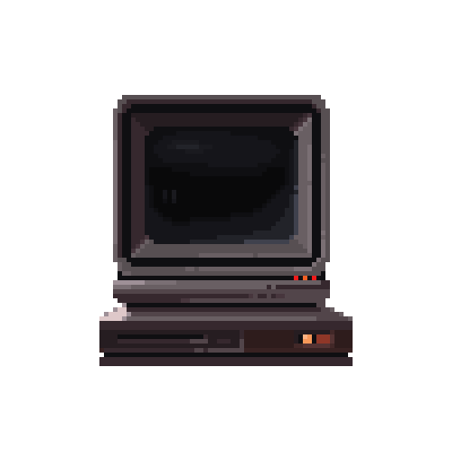

Инструкция по посещению Kraken
Платформа создана с нуля и не основана на стандартных готовых скриптах, что существенно уменьшает риск утечки личной информации пользователей. Над её разработкой трудилась команда опытных профессионалов, благодаря чему вы можете быть уверены в безопасности вашего пребывания на сайте. Тем не менее, несмотря на высокий уровень защиты, полностью полагаться только на встроенные меры безопасности не стоит. Для дополнительной защиты рекомендуется использовать предоставленные на этой странице ссылки и способы входа и взаимодействия с ресурсом.

#1 | Вход с Tor Browser
Для безопасного использования даркнет сайтов рекумендуеться использовать защищённый браузер анонимайзер Tor Browser. Для этого установите и включите Tor на вашем устройстве и перейдите по onion ссылке.Ссылка onion
#2 | Вход с VPN + Обычный браузер
Еще один способ получить доступ к Kraken — это воспользоваться VPN-сервисом, который также маскирует настоящий IP-адрес пользователя. Установите и включите VPN и через обычный браузер воспользуйтесь ссылкой ниже.Ссылка для VPN